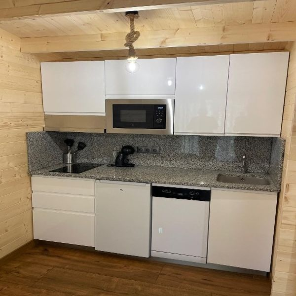
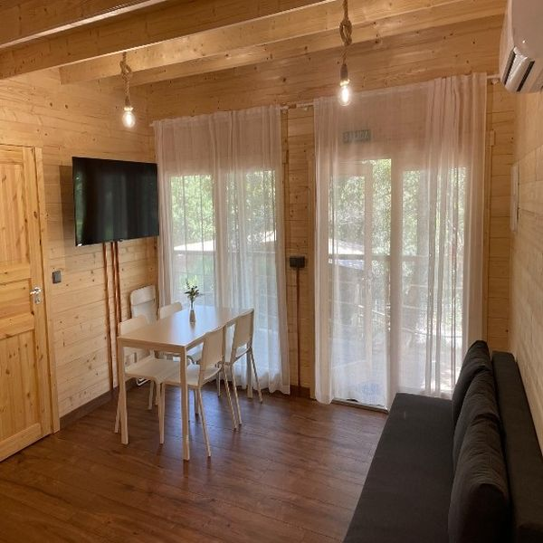

Sobre la Cabaña A Ruña
La Cabaña A Ruña es una cabaña para 6 personas, con dos habitaciones y sofá cama, en plena arboleda y con una terraza cubierta totalmente integrada entre los robles. No tiene jacuzzi. Punto de partida para Fisterra, Muxía y el Monte Pindo.
Características de la Cabaña A Ruña
- 👥 Capacidad para 6 personas
- 🛏️ Dos habitaciones y sofá cama
- ⛱️ Terraza cubierta, integrada entre los robles
- 📶 Wifi
- 🚫 Sin jacuzzi
Preguntas sobre la Cabaña A Ruña
¿Incluye desayuno?
No, el desayuno no está incluido en las cabañas para 6 personas.
¿Hay wifi?
Sí, hay wifi en la cabaña.
¿Se admiten mascotas?
Sí, se admite 1 mascota como máximo.
¿Cómo reservo la Cabaña A Ruña?
Elige las fechas y el número de personas en el buscador de la página principal: te mostramos si la cabaña está libre y el precio total de tu estancia.
Otras cabañas cerca de O Ézaro
- Cabaña Mónica: Cabaña accesible con jacuzzi cerca de O Ézaro
- Cabaña Ainhoa: Refugio entre robles con jacuzzi
- Cabaña Raquel: Jacuzzi y privacidad entre robles
- Cabaña Hugo: Terraza soleada con vistas al pantano de Santa Uxía
- Cabaña Andrea: Jacuzzi con vistas al Monte da Ruña
- Cabaña Paula: Jacuzzi y vistas a la altura de las ramas
- Cabaña Noa: Terraza con vistas al Monte Pindo
- Cabaña Alborés: Jacuzzi y jardín cerca de O Ézaro
- Cabaña A Moa: Cabaña para 6 personas entre robles
- Cabaña O Pindo: Cabaña para grupos junto al Monte Pindo
- Cabaña Xallas: Cabaña para 6 cerca del río Xallas